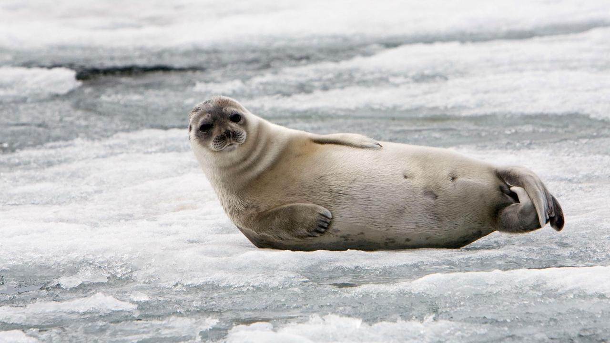
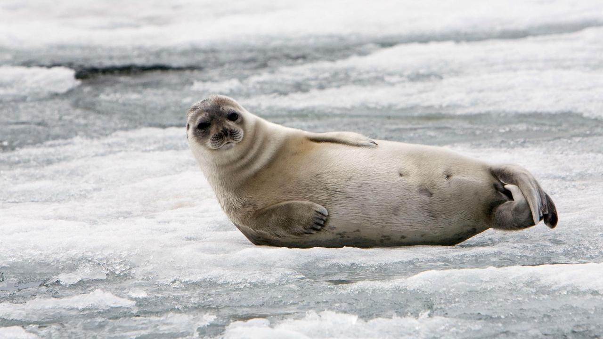

Artic Ocean: Food Sources
| Group Homepage
| Human Impact |
Animals and Plants |
Culture |
Inuit Cuisine:
The Artic is not a barren wasteland of snow and ice. There is lots of life thriving in the cold temperatures.
Ringed seal and bearded seal are the most important aspect of an Inuit diet and is often the largest part of an
Inuit hunter's diet. Land mammals such as caribou, polar bear, muskox, birds and their eggs are also a huge part of
their diet. In addition, saltwater and freshwater fish including sculpin, Arctic cod, Arctic char, capelin and lake
trout are also included.

 

Inupiat From Northwestern Alaska:
They do their hunting and foraging on the Seward Peninsula and along the Bering Sea. Their meat meat is seal, walrus
-- marine mammals that live in cold water and have lots of fat. They use seal oil for their cooking and as a dipping sauce
for food. The land animals they hunt are moose, caribou, and reindeer. They also catch crab and lots of fish — salmon,
whitefish, tomcod, pike, and char. They prepare their fish by cooking, drying, smoking, or eating them frozen. The frozen
fish are sliced in thing slivers to eat. In addition they ferment some fish and seal flippers where they put their fish
into seal bags and ferment them.
Inuit Food in Canada:
Country food is a term that describes traditional Inuit food, including game meats, migratory birds, fish and foraged foods.
It is an integral part of Inuit identity and culture, and contributes to self-sustainable communities.
The Inuit harvest, trap, hunt and fish for country food. They use every part of the animal, if not for food than for other
functions, such as clothing (animal hides and furs), heating (seal oil) and the making of various traditional tools (bones
and sinew). The traditional Inuit diet is high in healthy fat and protein and is designed for Arctic living. Their high fat
and protein diet keeps them energized and protects against starvation and death. Animal fat fuels hunters and warms the
community.